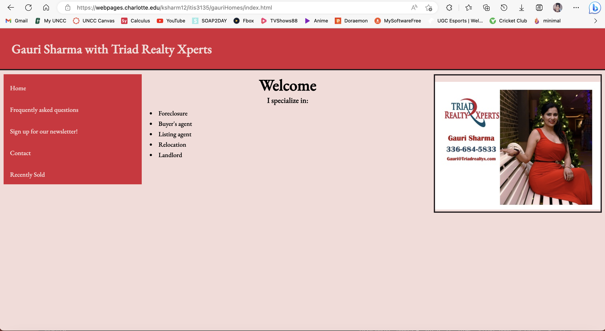

Peer Review 1
Sharma, Krish

Site Page
- Every Page has a layout using header, main, and footer: Yes, but the footer needs validation buttons with hyperlinks, instead of just links.
- Home page is named index.html: Yes
- CSS and JS in Seperate Files: Yes
- Consistent Layout Across All Pages: Yes
- Appropriate content on home page including images: Yes, but it could use more info on index page about the website.
- Link to all 5 Minimum Pages (including Home) and the Links Work on all the Pages: Yes
- Navigation Bar is consistent position across pages: Yes
- Appropriate Content on each page: Yes
- Website is Aesthetically Pleasing: Yes, but more colors could've looked much better, but current colors give it a minimal design look.
- Easy to navigate: Yes
- HTML or CSS Validation Links: Yes, but just text hyperlinks
- Repetition: Its all minimal and same desgin on all 5 pages.